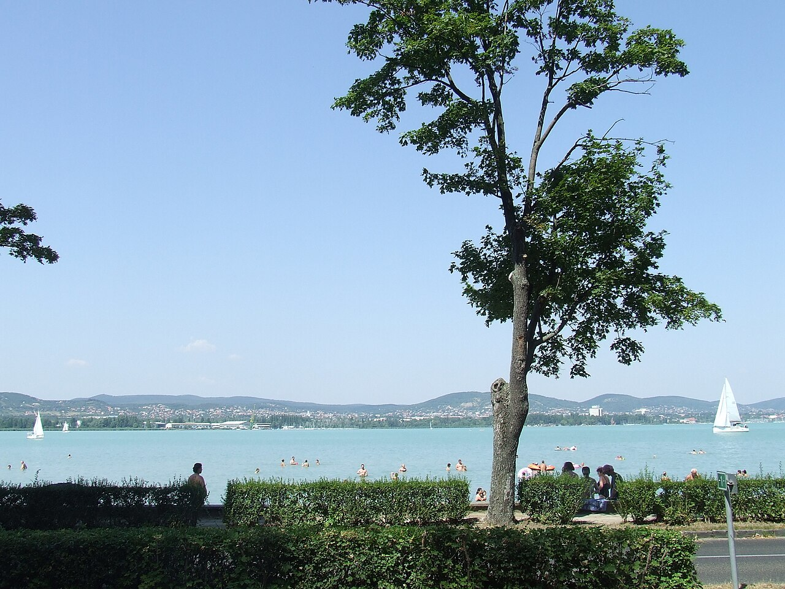
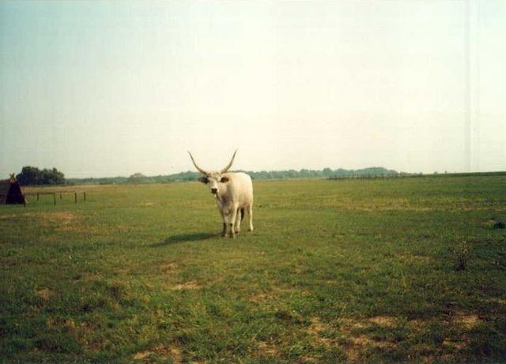
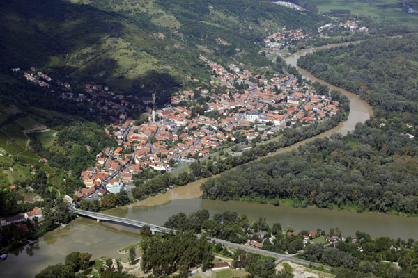
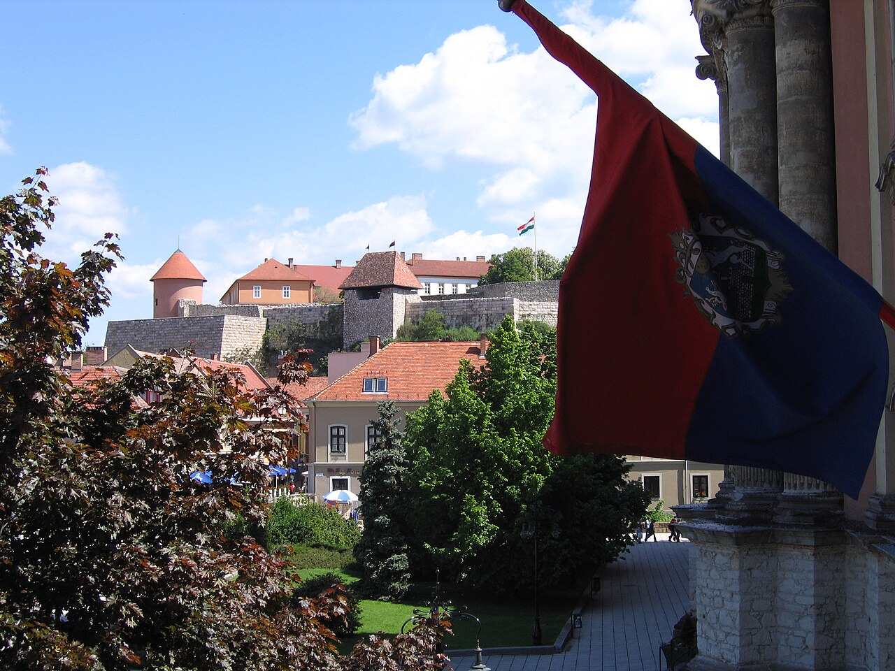
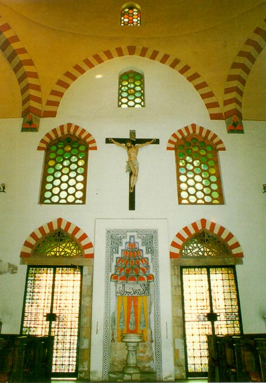
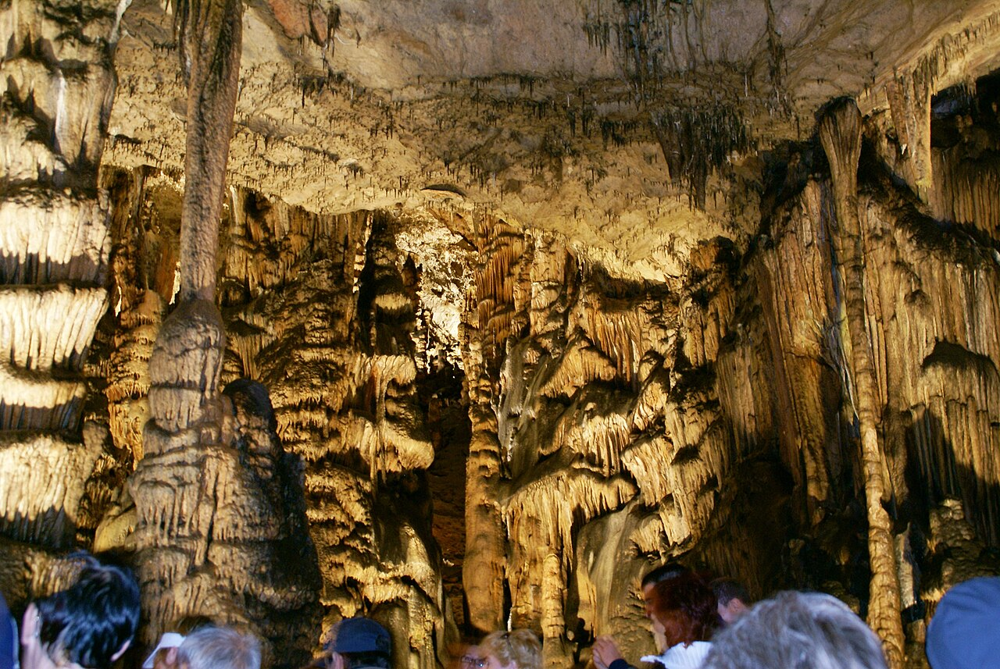

한눈에 보기
- 직항인천 → 부다페스트대한항공·아시아나, 합쳐 매일, 약 13시간
- 시차한국보다 8시간 느림서머타임(3월 말~10월 말)에는 7시간
- 추천 시기5~6월, 9월12월은 크리스마스 마켓과 노천 온천 여행으로 추천
- 추천 일정4~6일부다페스트 3~4 + 센텐드레·에게르·발라톤 중 당일치기
- 물가서울과 비슷하거나 조금 비쌈마트·기차는 싸고, 식당·숙소·온천·입장료는 비쌈
- 통화포린트(HUF, Ft)1,000Ft ≈ 4,100원. 유로를 쓰지 않음
- 입국무비자 90일솅겐 국가 전체 합산 180일 중 90일
- 전압230V · C/F형한국 플러그 그대로 사용
한국에서 가는 법
대한항공
주 4회- 노선
- 인천(ICN) → 부다페스트 리스트 페렌츠(BUD)
- 운항 요일
- 월·화·목·토 (2026년 기준)
- 비행 시간
- 갈 때 약 13시간 · 올 때 약 11시간 30분
2026년 4월부터 주 3회에서 주 4회로 늘었습니다. 낮 12시 30분 무렵 인천을 출발해 현지 저녁 6시 무렵 도착합니다.
아시아나항공
주 3회- 노선
- 인천(ICN) → 부다페스트(BUD)
- 운항 요일
- 대한항공이 뜨지 않는 요일 중심 (2026년 4월 3일 취항)
- 비행 시간
- 갈 때 약 13시간 · 올 때 약 11시간 30분
대한항공과 합쳐 매일 연결됩니다. 2026년 12월 17일 통합 대한항공 출범 뒤에는 편명·요일이 바뀔 수 있습니다.
직항 말고 이렇게도 갈 수 있어요
- 빈 직항으로 들어가 기차로 오는 방법도 흔합니다. 빈 → 부다페스트 약 2시간 40분.
- 바르샤바(LOT)·헬싱키(핀에어)·프랑크푸르트(루프트한자)·이스탄불(터키항공) 경유편이 직항보다 싼 경우가 많습니다.
- 프라하 IN · 부다페스트 OUT(또는 그 반대)으로 프라하–빈–부다페스트를 잇는 동유럽 3국 일정이 한국 여행자에게 가장 흔합니다.
아시아나 운항 요일은 보도마다 달라 확정하지 못했습니다. 통합(2026년 12월) 뒤 다시 조정될 수 있으니 예약 전에 항공사 사이트에서 날짜를 넣어 확인하세요.
언제 가면 좋을까
부다페스트의 월평균 최고·최저 기온과 강수량입니다. 아래 칸의 색은 여행하기 좋은 정도입니다.
프라하·바르샤바보다 여름이 더 덥고, 7~8월에는 35도 넘는 날도 있습니다. 해 지는 시각: 12월 오후 4시 무렵, 6월 밤 8시 45분 무렵.
봄
3~5월3월 15일 혁명 기념일에 사람들이 삼색 리본(코카르드)을 달고, 4월에는 부다페스트 봄 축제가 열립니다. 5월이 되면 강변 테라스와 시민공원이 사람들로 가득합니다.
좋은 점
- 여름보다 인파가 적고 숙소가 저렴
- 5월 날씨가 가장 걷기 좋음
- 쌀쌀한 날 노천 온천이 제격
아쉬운 점
- 3~4월은 날씨가 변덕스러움
- 부활절 연휴에는 숙소가 비쌈
옷차림경량 패딩과 겹쳐 입을 옷
여름
6~8월다뉴브 강변과 폐허 바(루인 바)가 밤늦게까지 붐비고, 8월에는 시게트 페스티벌과 8월 20일 건국 기념 불꽃놀이가 열립니다. 현지인은 "헝가리의 바다" 발라톤 호수로 피서를 갑니다.
좋은 점
- 긴 저녁과 야외 문화
- 발라톤 호수 수영과 휴양
- 불꽃놀이·음악 축제
아쉬운 점
- 35도 넘는 폭염일, 그늘 없는 돌길
- 시게트·F1 기간에는 숙소가 매우 비쌈
- 에어컨 없는 트램·숙소가 있음
옷차림반팔, 모자, 선크림, 온천용 수영복
가을
9~11월9월에 부다성에서 와인 축제가 열리고, 에게르·토카이 같은 와인 산지는 수확철을 맞습니다. 11월 11일 성 마르틴의 날에는 햇와인과 거위 요리를 먹습니다.
좋은 점
- 9월은 날씨·인파·가격의 균형이 가장 좋음
- 와인 산지 여행 제철
- 단풍 든 부다 언덕
아쉬운 점
- 11월은 흐리고 일찍 어두워짐
- 발라톤 호수는 비수기로 많은 가게가 닫음
옷차림9월 가벼운 재킷, 10~11월 코트
겨울
12~2월뵈뢰슈마르티 광장과 성 이슈트반 대성당 앞에 크리스마스 마켓이 서고, 대성당 벽에 조명 쇼가 펼쳐집니다. 김이 피어오르는 세체니 노천 온천과 시민공원 야외 스케이트장은 겨울에만 볼 수 있는 풍경입니다.
좋은 점
- 크리스마스 마켓과 조명 쇼
- 눈 속 노천 온천
- 1~2월 항공·숙소가 가장 저렴
아쉬운 점
- 영하의 날씨와 짧은 해
- 강바람이 차가워 야경 유람선은 실내석 위주
- 발라톤·소도시는 대부분 비수기
옷차림두꺼운 패딩, 모자·장갑, 미끄럽지 않은 신발
여행자도 즐길 수 있는 축제·행사
-
2월
부쇼야라시 가면 축제Busójárás
남부 모하치에서 나무 가면과 털옷을 입은 "부쇼"들이 겨울을 쫓아내는 사육제. 유네스코 인류무형문화유산입니다(2027년은 2월 9일 참회 화요일까지).
여행 팁부다페스트에서 기차·버스로 약 3시간. 당일치기보다 1박을 권합니다.
-
3월 15일
1848년 혁명 기념일Nemzeti ünnep
합스부르크에 맞선 1848년 혁명을 기념하는 날. 사람들이 삼색 리본을 달고, 국립박물관 앞에서 행사가 열립니다.
여행 팁일부 박물관이 무료로 열리기도 합니다.
-
3~4월
부활절Húsvét
부활절 월요일 아침 남자들이 여자들에게 향수(옛날에는 물동이)를 뿌리는 "로치올코다시" 풍습이 남아 있습니다.
여행 팁성금요일·부활절 월요일은 공휴일. 2027년은 3월 26·29일.
-
4월
부다페스트 봄 축제Budapesti Tavaszi Fesztivál
클래식·재즈·무용·연극 공연이 도시 곳곳에서 열리는 종합 예술 축제입니다.
여행 팁예술궁전(뮈파)과 오페라하우스 공연을 볼 좋은 기회입니다.
-
6월 하순
박물관의 밤Múzeumok Éjszakája
하지 무렵 토요일 저녁부터 새벽까지 전국 박물관이 문을 엽니다. 하나의 표로 여러 곳을 돌 수 있습니다.
여행 팁평소 닫혀 있는 공간이 열리기도 합니다.
-
7월 말~8월 초
헝가리 F1 그랑프리Magyar Nagydíj
부다페스트 근교 헝가로링에서 열리는 포뮬러 원 경기입니다.
여행 팁경기 주간에는 부다페스트 숙소 가격이 크게 오릅니다.
-
8월 중순
시게트 페스티벌Sziget Fesztivál
다뉴브 강 위 오부다 섬에서 약 일주일 동안 열리는 유럽 최대급 음악 페스티벌입니다.
여행 팁축제 기간 시내 숙소가 빨리 마감됩니다.
-
8월 20일
성 이슈트반의 날(건국 기념일)Szent István-nap
첫 국왕 성 이슈트반과 건국을 기념하는 가장 큰 국경일. 밤에 다뉴브 강 위로 대규모 불꽃놀이가 열리고, 부다성에서는 수공예 축제가 열립니다.
여행 팁강변 명당은 오후부터 찹니다. 불꽃놀이 뒤 대중교통이 매우 혼잡합니다.
-
9월
부다페스트 와인 축제Budapest Borfesztivál
부다성 안뜰에서 헝가리 전역의 와이너리가 와인을 내놓는 축제입니다. 이 무렵 에게르·토카이 등 산지도 수확 축제를 엽니다.
여행 팁입장권에 시음 잔이 포함됩니다.
-
10월 23일
1956년 혁명 기념일Nemzeti ünnep
소련에 맞선 1956년 혁명을 기념하는 날. 국회의사당 앞에서 행사가 열립니다.
여행 팁국회의사당 주변이 통제될 수 있습니다.
-
11월 11일
성 마르틴의 날Márton-nap
그해 햇와인을 처음 맛보고 거위 요리를 먹는 날입니다. 식당마다 거위 특별 메뉴를 냅니다.
여행 팁공휴일은 아니므로 상점은 평소처럼 엽니다.
-
11월 중순~1월 초
크리스마스 마켓Karácsonyi vásár
뵈뢰슈마르티 광장과 성 이슈트반 대성당 앞 광장의 마켓이 유명합니다. 대성당 정면 조명 쇼는 저녁마다 열립니다.
여행 팁굴뚝빵 퀴르퇴슈컬라치(kürtőskalács)와 따뜻한 와인(포랄트 보르)을 맛보세요.
공휴일과 기념일
| 날짜 | 공휴일 | 여행자에게 미치는 영향 |
|---|---|---|
| 1월 1일 | 새해 | 상점 대부분 휴무 |
| 3월 15일 | 1848년 혁명 기념일삼색 리본과 기념 행사 | 상점 대부분 휴무, 도심 행사 |
| 성금요일 · 부활절 월요일 (2027년 3월 26·29일) | 부활절월요일 아침 물(향수) 뿌리기 풍습 | 상점 대부분 휴무 |
| 5월 1일 | 노동절공원 축제 | 상점 대부분 휴무 |
| 성령강림 월요일 (2027년 5월 17일) | 성령강림절 | 상점 대부분 휴무 |
| 8월 20일 | 성 이슈트반의 날가장 큰 국경일, 다뉴브 불꽃놀이 | 도심 교통 통제, 숙소 비쌈 |
| 10월 23일 | 1956년 혁명 기념일국회의사당 앞 행사 | 상점 대부분 휴무 |
| 11월 1일 | 모든 성인의 날묘지 촛불 추모 | 상점 대부분 휴무 |
| 12월 24~26일 | 성탄 전야 · 성탄절24일 저녁 가족 만찬 | 24일은 오후 일찍 상점이 닫고, 25·26일은 휴무 |
헝가리는 일요일에도 대부분의 상점이 문을 엽니다. 공휴일이 화·목요일이면 사이 날을 쉬고 다른 토요일에 일하는 "징검다리 휴일"을 정부가 정하는 경우가 있어, 평일에도 관공서·일부 상점이 쉴 수 있습니다.
물가: 서울과 비교하면
"동유럽이라 싸다"는 기대와 달리 부다페스트는 서울과 비슷하거나 조금 비쌉니다. 마트 장보기와 장거리 기차는 확실히 싸지만, 최근 몇 년 물가가 빠르게 올라 식당·숙소·택시·온천·명소 입장료는 서울보다 비싼 편입니다. 지방 도시로 가면 20~30% 내려갑니다.
환율 기준: 1포린트(Ft) ≈ 4.1원 (1,000Ft ≈ 4,100원) · 막대의 진한 부분은 최저가, 연한 부분은 최고가까지입니다.
-
카페 카푸치노비슷
-
펍·루인 바 생맥주 0.5L약 15% 비쌈
-
평일 점심 메뉴(너피 메뉘)약 29% 비쌈
-
중급 식당 메인 요리비슷
-
마트 맥주 0.5L약 45% 저렴
-
마트 생수 1.5L약 39% 저렴
-
시내 대중교통 1회권약 19% 비쌈
-
앱 택시(볼트) 시내 5km약 67% 비쌈
-
기차 부다페스트 → 빈 (약 2시간 40분)비슷
-
3성급 호텔 더블룸 1박약 42% 비쌈
-
세체니 온천 입장약 3.7배
-
국회의사당·부다성 등 명소 입장약 12배
현지 가격은 2026년 하반기 부다페스트 기준 대략적인 범위이며, 원화는 1Ft = 4.1원으로 계산했습니다. 국회의사당은 EU 시민이 아니면 입장료가 두 배 가까이 비쌉니다. 대중교통 요금은 바뀔 수 있으니 BudapestGO 앱에서 확인하세요.
현지 교통
공항에서 시내로
100E 공항 익스프레스 버스가 데악 광장까지 약 35~45분에 갑니다(전용 승차권이 필요하고 일반 24시간권으로는 못 탐). 더 싸게 가려면 200E 버스로 쾨바냐-키슈페시트까지 간 뒤 메트로 M3으로 갈아탑니다.
100E 약 2,200~2,500Ft
시내 대중교통
메트로 4개 노선과 트램·버스가 촘촘합니다. 다뉴브 강변을 달리는 트램 2번은 그 자체로 관광 코스입니다. BudapestGO 앱으로 표를 사고, 1회권은 갈아탈 때마다 새로 내야 하므로 2~3일 머물면 24시간·72시간권이 낫습니다. 검표가 잦습니다.
1회권 450Ft · 24시간권 약 2,500Ft
도시 간 이동
MÁV 기차로 빈 약 2시간 40분, 에게르 약 2시간, 발라톤 호수(시오포크) 약 1시간 30분. 예술가 마을 센텐드레는 교외열차 HÉV로 약 40분이며, 시 경계 밖 구간 표를 따로 사야 합니다.
1,500~16,000Ft (6천~6만 원)
택시와 앱
부다페스트 택시는 시가 정한 단일 요금제라 노란 공식 택시면 바가지가 적습니다. 볼트도 널리 쓰입니다. 공항에서는 공식 택시 승차장(Főtaxi)을 이용하세요.
시내 5km 2,500~4,000Ft
장점과 단점
이래서 좋아요
- 대한항공·아시아나 직항으로 매일 연결
- 국회의사당과 다뉴브 야경은 유럽에서 손꼽히는 풍경
- 세체니·겔레르트 등 온천 문화를 쉽게 즐길 수 있음
- 빈·브라티슬라바·프라하로 이어 가기 쉬움
- 굴라시·파프리카 요리 등 얼큰한 음식이 한국인 입맛에 맞음
이건 알고 가세요
- 최근 물가가 빠르게 올라 관광지 가격은 서유럽 수준인 곳도 있음
- 헝가리어는 단어를 짐작하기 어려워 표지판 읽기가 힘듦
- 관광 식당의 봉사료 이중 청구, 호객 바 바가지에 주의
- 7~8월 폭염
- 포린트는 단위가 커서(1,000Ft ≈ 4,100원) 계산이 헷갈림
관광 명소 9곳
사진은 Wikimedia Commons에 공개된 실제 촬영본이며, 저작자와 라이선스를 각 사진 아래에 적었습니다. 촬영한 날씨·시기·구도에 따라 실제 모습은 다를 수 있습니다.
-

사진: Mike is Michi · CC BY-SA 4.0 · Wikimedia Commons 부다페스트 국회의사당Országház
도나우강을 마주한 네오고딕 의회 건물.
자세히 보기
부다페스트를 대표하는 강변 랜드마크. 강 반대편에서 본 파사드나 밤의 반영 사진이 도시의 정체성을 보여준다. 주변의 도나우강변 경관은 유네스코 세계유산 구성요소다.
- 관람·학습 포인트
- 강변에서 보는 네오고딕 외관 · 도나우강 유람·교량과의 관계 · 도시 통합과 근대 수도 형성
- 방문 유의사항
- 내부 투어는 사전예약·보안 규정 확인.
출처: whc.unesco.org
-

사진: VillageHero · CC BY-SA 2.0 · Wikimedia Commons 세체니 온천Széchenyi gyógyfürdő
노란색 네오바로크 건물과 야외 탕.
자세히 보기
부다페스트의 온천문화를 보여주는 대표 시설이다. 건축물과 뜨거운 물이 있는 야외 수영장이라는 독특한 장면이 특징이다.
- 관람·학습 포인트
- 네오바로크 외벽 · 야외 온천탕 풍경 · 온천수와 역사적 목욕 문화
- 방문 유의사항
- 목욕 시설 사진 촬영은 사람들의 사생활을 존중하고 규정 확인.
출처: visithungary.com
-

사진: Veronika.szappanos · CC BY-SA 4.0 · Wikimedia Commons 부다성 지구Budai Várnegyed
도나우강 서쪽 언덕의 성곽과 거리.
자세히 보기
부다 왕궁, 어부의 요새, 마차시 성당을 포함한 언덕 지역. 한 장의 야경보다는 어부의 요새 아치 등 건축 디테일로 국회의사당 사진과 차별화할 수 있다.
- 관람·학습 포인트
- 어부의 요새 전망 통로 · 마차시 성당의 지붕 · 구시가지 보행길
- 방문 유의사항
- 부다성 복원 공사로 동선이 바뀔 수 있음.
출처: whc.unesco.org
-

사진: Christo · CC BY-SA 4.0 · Wikimedia Commons 발라톤 호수·티허니Balaton / Tihany
호수 위로 펼쳐진 반도와 수도원.
자세히 보기
중부유럽의 큰 호수 중 하나로, 여름 휴양·자전거·와이너리·반도 마을의 경관이 한데 어우러진다. 티허니 수도원과 푸른 호수를 같이 보여주는 사진이 적절하다.
- 관람·학습 포인트
- 티허니 수도원과 호수 · 해변·자전거길 · 발라톤 북안 포도밭
- 방문 유의사항
- 호수 수영 시즌과 교통은 계절 차가 큼.
출처: visithungary.com
-

사진: Wojsyl · CC BY-SA 3.0 · Wikimedia Commons 호르토바지 국립공원Hortobágyi Nemzeti Park
광활한 푸스타 초원과 목축 문화.
자세히 보기
헝가리 대평원의 전통 목축과 습지 생태계를 지닌 세계유산. 구공교(Kilenclyukú híd), 말·소·조류의 모습은 수도 건축물과 다른 시각적 분위기를 만든다.
- 관람·학습 포인트
- 구공교의 반복 아치 · 목동·목축의 전통 · 조류 관찰과 습지 생태
- 방문 유의사항
- 국립공원 보호 구역의 출입·드론 규정 확인.
출처: whc.unesco.org
-

사진: Civertan · CC BY-SA 3.0 · Wikimedia Commons 토카이 와인 문화경관Tokaj-Hegyalja
포도밭과 저장고가 만드는 와인 지역.
자세히 보기
역사적인 포도 재배 및 와인 생산으로 유네스코 세계유산에 오른 지역이다. 완만한 언덕의 포도밭과 작은 마을을 핵심 사진으로 사용할 것을 권장한다.
- 관람·학습 포인트
- 와인 저장고와 지하 셀러 · 포도 재배 지역의 자연조건 · 지역사와 유산 보전
- 방문 유의사항
- 지역 소개는 가능하나 음주 권유·판매 광고와 구분.
출처: whc.unesco.org
-

사진: Andrew Bossi · CC BY-SA 2.5 · Wikimedia Commons 에게르 성Egri vár
16세기 방어전의 역사적 무대.
자세히 보기
에게르 성은 오스만 제국의 공성전과 관련된 기억을 상징한다. 성벽과 대포·박물관 전시로 헝가리의 중세·근세 역사를 소개할 수 있다.
- 관람·학습 포인트
- 견고한 석조 성벽 · 16세기 전투의 역사 · 에게르 시내의 바로크 거리
- 방문 유의사항
- 영웅담보다 역사적 맥락과 다양한 관점을 균형 있게 전달.
출처: visithungary.com
-

사진: Jpatokal · CC BY-SA 3.0 · Wikimedia Commons 페치 초기 기독교 유산Pécs / Sopianae
로마시대 지하묘실과 오스만 건축의 도시.
자세히 보기
페치는 초기 기독교 묘실이 세계유산으로 등재된 도시이며, 중앙광장에는 오스만 시대 건축의 흔적도 남아 있다. 지하 묘실과 돔 건축의 대비를 보여준다.
- 관람·학습 포인트
- 고대 로마시대 기독교 묘실 · 가지 카심 파샤 모스크 교회 · 대학·예술 문화
- 방문 유의사항
- 유네스코 등재 대상은 도시 전체가 아니라 특정 묘역임을 명시.
출처: whc.unesco.org
-

사진: Fenyessanyi · CC BY 3.0 · Wikimedia Commons 어그텔레크 동굴Aggteleki-karszt / Baradla
슬로바키아 국경까지 이어지는 카르스트 동굴.
자세히 보기
어그텔레크 카르스트의 동굴들은 슬로바키아 쪽 동굴계와 함께 유네스코 자연유산에 등재된다. 종유석과 큰 석회암 공간이라는 실내 자연경관을 활용하기 좋다.
- 관람·학습 포인트
- 바라들라 동굴 종유석 · 국경을 넘는 지질 생태계 · 동굴 지형 형성 원리
- 방문 유의사항
- 동굴 내부의 사진·플래시 제한 및 예약 확인.
출처: whc.unesco.org
추천 동선
| 테마 | 동선 | 포인트 |
|---|---|---|
| 처음 가는 헝가리 | 부다페스트 3일 | 부다성·어부의 요새·국회의사당, 온천 한 곳, 다뉴브 야경 유람선 |
| 도나우 벤드 | 부다페스트 → 센텐드레 → 비셰그라드 → 에스테르곰 | 강이 굽이치는 구간의 예술가 마을·성채·대성당을 하루에 |
| 와인 산지 | 부다페스트 → 에게르(1박) 또는 토카이 | "황소의 피" 레드 와인과 귀부 와인, 미녀의 계곡 와인 저장고 |
| 여름 호수 | 부다페스트 → 발라톤 호수 티하니 | 라벤더 언덕과 수도원, 호수 수영 |
| 대평원 | 부다페스트 → 호르토바지 국립공원 | 유네스코 유산 초원, 목동 문화와 회색 소 |
| 동유럽 3국 일주 | 프라하 → 체스키크룸로프 → 빈 → 부다페스트 | 한국 여행자에게 가장 흔한 10~12일 동선 |
기차·버스 시간은 대략적인 소요 시간입니다.
여행 전에 확인하세요
운영시간·입장료·예약·출입 규정은 바뀔 수 있으니, 방문 전에 각 명소의 공식 안내에서 다시 확인하세요. 카드의 "자세히 보기"에 참고한 출처를 적었습니다.
여행 실전 팁
- 입국
- 한국 여권은 솅겐 지역 180일 중 90일까지 무비자. 2026년 4월부터 EU 출입국시스템(EES)이 전면 시행되어 첫 입국 때 지문·얼굴을 등록합니다. 사전 여행허가(ETIAS)는 2026년 11월 현재 시작일이 정해지지 않았습니다.
- 돈
- 카드·애플페이가 거의 어디서나 됩니다. 결제 단말기나 ATM이 원화나 유로 결제를 권하면 포린트(HUF)를 고르세요. 유로를 받는 가게도 있지만 환율이 나쁩니다.
- 팁
- 계산서에 봉사료(szervizdíj) 10~15%가 이미 붙어 있는 식당이 많습니다. 붙어 있으면 팁을 따로 낼 필요가 없고, 없으면 10% 정도를 냅니다.
- 온천
- 수영복·슬리퍼·수건을 챙기면 대여료를 아낄 수 있습니다. 실내 수영장은 수영모가 필요할 수 있습니다. 세체니는 오전 일찍이나 평일 저녁이 덜 붐빕니다.
- 안전
- 치안은 좋은 편이지만 붐비는 트램과 관광지에서 소매치기를 조심하세요. 길에서 말을 걸어 바나 클럽으로 데려가는 호객은 큰 바가지로 이어지는 경우가 있으니 따라가지 마세요.
- 예절
- 맥주잔을 부딪치지 않는 옛 풍습이 있습니다(1849년 혁명 지도자 처형 때 오스트리아군이 건배했다는 이야기에서 유래). 와인·팔링커는 건배해도 됩니다. 인사는 "요 너포트(Jó napot)", 감사는 "쾨쇠뇜(Köszönöm)".
- 면세
- 한 가게에서 일정 금액 이상 사면 부가세 환급(Tax Free)을 받을 수 있습니다. 기준 금액은 매장에서 확인하고, 출국 공항에서 도장을 받으세요.
- 통신·물
- 공항과 시내에서 현지 유심·eSIM을 살 수 있습니다. 수돗물은 마셔도 되지만 식당 물은 대부분 유료입니다.
여행 정보 출처
- 대한항공
- 더구루 — 대한항공 헝가리 노선 주 4회 증편
- 아시아경제 — 아시아나 부다페스트 신규 취항
- 부다페스트 대중교통 BKK — 공항버스 승차권
- 헝가리 철도 MÁV
- 헝가리 관광청 Visit Hungary
- 부다페스트 관광청
- EU 출입국시스템(EES)·ETIAS 안내
- 외교부 해외안전여행
항공 운항·요금·가격은 2026.11.14에 확인한 내용입니다. 시즌과 정책에 따라 바뀌므로 출발 전에 공식 사이트에서 다시 확인하세요.